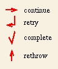

This figure shows the various badges that make up a step, as well a step's possible connections to other steps. The interface badge at the top is a circle by which this step is connected to its parent. The circle is filled if there are local definitions associated with this step, and is empty otherwise. The things that may be declared in an interface are the agent who is to carry out the step, resource requirements of the step, variable declarations, exceptions that may be thrown, and messages that may be sent.
Below the circle is the step name. To the left is a triangle called the pre-requisite badge. The pre-requisite is a step that must be successfully completed for this step to begin execution. If the pre-requisite is not completed successfully, an exception is thrown and the step is not allowed to execute. The badge appears filled if the step has a pre-requisite step, and an edge may be shown that connects this step to its pre-requisite (not shown). On the right is another similarly filled triangle called the post-requisite badge. The postrequisite step begins execution immediately after the step completes execution, but must also successfully complete for the parent to be notified of the step's completion. If the postrequisite does not complete successfully, an exception is thrown.
Within the box below the step name are three more badges. From left to right, they are the control flow badge, reaction badge, and exception handler badge. Substeps are connected to the control flow badge. The edge connecting a step to a substep is annotated with parameter passing information. The control flow badge indicates the order in which the substeps may be executed. Little-JIL defines four control flow badges:
A sequential step executes its substeps in order from left to right, beginning the next substep only after the preceding substep completes successfully. A parallel step allows the substeps to be executed in parallel. A sequential or parallel step requires all of its substeps to be performed. A choice step allows the agent performing the step to choose which single substep to execute. A try step identifies alternative ways of performing the step but hardwires the order in which the alternatives should be tried from left to right. A choice or try step requires exactly one of its substeps to be performed successfully.
The lightning bolt in the middle is the reaction badge to which reaction steps are attached. A reaction identifies a broadcast message that it responds to.
The red X is the exception handler badge to which exception handlers are attached. An exception handler identifies the exception that it is handling, optionally a step to perform to handle the exception, and a continuation badge to indicate what to do after completion of the handler step. There are four continuation badges:

The continue badge indicates that the execution of the step should continue. For sequential and parallel steps, this is as if the substep that through the exception completed successfully. For choice and try steps, this allows an agent to perform a different alternative. The retry badge indicates that the entire step should be restarted from the beginning. The complete badge indicates that the entire step should be considered successful. The rethrow badge indicates that the entire step should be considered unsuccessful and the exception should be thrown again.The controlflow, reaction, and exception badges are hidden if there are no child steps, reactions, or handlers, respectively.